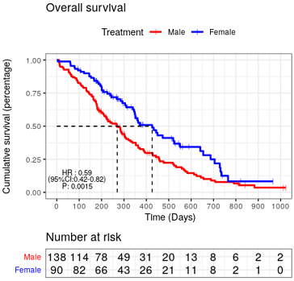

生物信息与R语言QQ群: 187923577
Tips: 看不清请刷新，换个颜色再看。
1. 比较干净的背景: +theme_bw(); 最干净的背景: +theme_classic()
2. 参数的解释: 生物慕课网
3. 本页面最顶/底部有生信QQ群号，欢迎加入讨论，严禁广告。
详情查看githug上 survminer 包官方示例。
大佬写过 好几个高层包: ggpubr, factoextra, survminer, ggcorrplot, rstatix, datarium。
 # 展示的是最后一个代码的图。
# load data ####
library("survival")
library("survminer")
data("lung")
#write.table(lung, "lung.df.txt")
dim(lung) #228 10
head(lung) #sex: Male=1 Female=2
# inst time status age sex ph.ecog ph.karno pat.karno meal.cal wt.loss
#1 3 306 2 74 1 1 90 100 1175 NA
#2 3 455 2 68 1 0 90 90 1225 15
#3 3 1010 1 56 1 0 90 90 NA 15
# inst: Institution code
# time: Survival time in days
# status: censoring status 1=censored, 2=dead (用1/2编码是历史习惯)
# age: Age in years
# sex: Male=1 Female=2
# ph.ecog: ECOG performance score as rated by the physician.
# 0=asymptomatic,
# 1= symptomatic but completely ambulatory,
# 2= in bed <50% of the day,
# 3= in bed > 50% of the day but not bedbound,
# 4 = bedbound
# ph.karno: Karnofsky performance score (bad=0-good=100) rated by physician
# pat.karno: Karnofsky performance score as rated by patient
# meal.cal: Calories consumed at meals
# wt.loss: Weight loss in last six months
boxplot(time~status, data=lung)
#只需要三列: time, status, 分类变量
# 分类变量可以是表达值、某个组合打分等和阈值的比较，结果是二分类的即可。
# 看性别是否对生存期有影响
# 构建模型
fit <- survfit(Surv(time, status) ~ sex, data=lung)
# 绘制原生KM曲线
plot(fit)
#可优化点：
#1）区分两条线的颜色和legend
#2）坐标轴，标题，主题优化
#3）Risk table
#4）P值，OR值，CI值等注释信息
#1) 线的颜色是啥？----
p1 <- ggsurvplot(fit)
p1
#2) 坐标轴，标题，主题优化 ----
p2 <- ggsurvplot(fit, data = lung,
surv.median.line = "hv", #添加中位生存曲线
palette=c("red", "blue"), #更改线的颜色
legend.labs=c("Male","Female"), #标签
legend.title="Treatment", #图例标题
title="Overall survival", #标题
ylab="Cumulative survival (percentage)", xlab = " Time (Days)", #更改横纵坐标
censor.shape = 124, censor.size = 2, conf.int = FALSE, #删失点的形状和大小
break.x.by = 100 #横坐标间隔
)
p2
# 以上基本就完成了KM曲线颜色，线型大小，标签，横纵坐标，标题，删失点等的修改，Q2搞定！
# 注意：中位生存时间表示 50％ 的个体尚存活的时间，而不是生存时间的中位数！
#3) Risk Table ----
p3 <- ggsurvplot(fit, data = lung,
surv.median.line = "hv", #添加中位生存曲线
palette=c("red", "blue"),
legend.labs=c("Male","Female"), #标签
legend.title="Treatment",
title="Overall survival",
ylab="Cumulative survival (percentage)",xlab = " Time (Days)", #更改横纵坐标
censor.shape = 124,censor.size = 2,conf.int = FALSE,
break.x.by = 100,
risk.table = TRUE,tables.height = 0.2,
tables.theme = theme_cleantable(),
ggtheme = theme_bw())
p3
# 注 tables.height可调整为看起来“舒服”的高度
# 根据risk table 可以看出关键点的当前状态，Q3摆平！
#4) 添加注释信息 ----
# 添加KM的P值
P4 <- ggsurvplot(fit, data = lung,
pval = TRUE,#添加P值
pval.coord = c(0, 0.03), #调节Pval的位置
surv.median.line = "hv", #添加中位生存曲线
palette=c("red", "blue"),
legend.labs=c("Male","Female"), #标签
legend.title="Treatment",
title="Overall survival",
ylab="Cumulative survival (percentage)",xlab = " Time (Days)", #更改横纵坐标
censor.shape = 124,censor.size = 2,conf.int = FALSE,
break.x.by = 100,
risk.table = TRUE,tables.height = 0.2,
tables.theme = theme_cleantable(),
ggtheme = theme_bw())
P4
# pval.coord可以调节P值得位置
# 添加COX回归hazard ratio值等相关信息 ----
###添加HR ,CI ,P
res_cox<-coxph(Surv(time, status) ~sex, data=lung)
p5=p3
p5$plot = p3$plot +
ggplot2::annotate("text",x = 90, y = 0.15, size=3,
label = paste("HR :",round(summary(res_cox)$conf.int[1],2))) +
ggplot2::annotate("text",x = 90, y = 0.10, size=3,
label = paste("(","95%CI:",round(summary(res_cox)$conf.int[3],2),
"-",round(summary(res_cox)$conf.int[4],2),")",sep = ""))+
ggplot2::annotate("text",x = 90, y = 0.05, size=3,
label = paste("P:",round(summary(res_cox)$coef[5],4)))#+
#ggplot2::theme( axis.text.x = element_text(face="bold", color="blue", size=8))
p5
# 添加其他信息
# 可类似上述annotation得方式，使用ggplot2添加文字，箭头，公式等其他信息
就是 一根柱子加上一个圆，类似传统的柱状图，但是提供了更多的信息。
暂时无图。等学深入了再补充图。
library(ggpubr)
#微调数据，添加 name列，设置cyl位因子
dfm=mtcars
dfm$name=rownames(dfm)
dfm$cyl=as.factor(dfm$cyl)
head(dfm)
# 1.基本
ggdotchart(dfm, x = "name", y = "mpg",
color = "cyl", # 按照cyl填充颜色
palette = c("#00AFBB", "#E7B800", "#FC4E07"), # 修改颜色
sorting ="descending", #"ascending",
add = "segments", # 添加棒子
ggtheme = theme_pubr(), # 改变主题
#rotate=T,
xlab=""
)
# 2.横着，添加小球和数字
ggdotchart(dfm, x = "name", y = "mpg",
color = "cyl", # 按照cyl填充颜色
palette = c("#00AFBB", "#E7B800", "#FC4E07"), # 修改颜色
sorting = "descending",
add = "segments", # 添加棒子
add.params = list(color = "lightgray", size = 1.5),#改变棒子参数
rotate = TRUE, # 方向转为垂直
group = "cyl",
dot.size = 6, # 改变点的大小
label = round(dfm$mpg), # 添加label
font.label = list(color = "white", size = 9,
vjust = 0.5), # 设置label参数
ggtheme = theme_pubr(), # 改变主题
xlab=""
)
欢迎互相切磋，共同进步: 秋秋号 314649593, 请备注大名、来意。
秋秋群: 生物信息与R语言 187923577 禁止营销活动，否则飞机票。
bioToolKit is part of 生物慕课网 www.biomooc.com